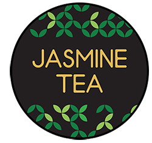
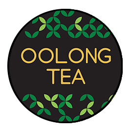

The Story
「Tea Time Any Time」
Let's meet up at the tea place
Eventually,Katea was established in 2017.I have considered hundreds of companions as my family.I own not only the responsibility,but also the great duty to be concerned with all my partners'development and learning;It seems simple,but I am unwilling to be ordinary,facing myself and confronting the prospects bravely.The resolution comes after the decision;the future is in our hands. In addition,i hope this place brings happiness and relation to every one who walk into this place
Tea Varieties
「Black Tea - Assam」
Near the Northern end of the Brahmapurtra River lies the region of Assam, one of the world's largest tea growing areas in the world. Assam tea is a top-rated black tea that is both fresh and flavorful. The "tippy" Assam teas of both first and second flush produce top quality liquor with body and strength. This gourmet tea is great when blended with milk; the milk enhances the existing flavors for a rich and robust taste.

「Green Tea - Jasmine」
Jasmine green tea grown on small tea farms, the green tea leaves are plucked and stored. Each Jasmine flower is picked before dawn, just prior to opening; they are then stored with the green tea leaves for four hours or longer. This process is done four to seven more times to ensure that the tea leaves are sufficiently scented. Jasmine tea has a sweetened, floral flavor and brightness, while the aroma is extremely enticing. These characteristics are what give this green tea a refreshing appeal.

「Oolong Tea - Magnolia Oolong Tea」
Among the most famous of Chinese teas is the oolong Tea, also known as the black dragon tea because of its dark, long, and curled-leaf appearance. Oolong is a powerful, yet natural anti-oxidant with lots of flavor. Grown on the mountainous landscape of northern Fujian, Chinese Oolong is the official tea used in the 400 year-old ancient Chinese Fujian Tea Ceremony; this ceremony takes place for the sole purpose of celebrating the art of tea and the tea itself. Once imbued with magnolia and steeped, this Oolong tea offers extraordinary benefits both in taste and health; the complement to each other is flawless!